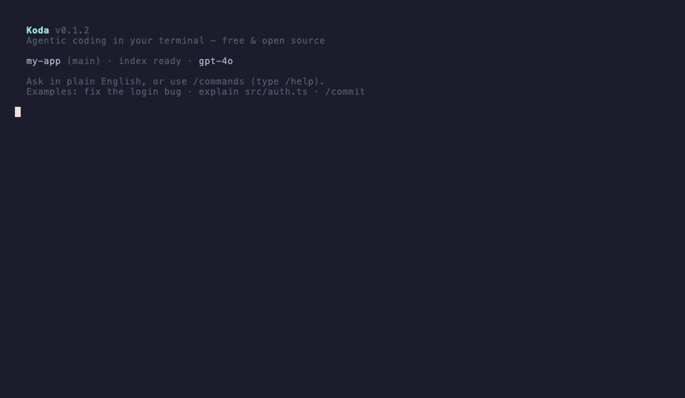

Repository intelligence, context efficiency, and built-in benchmarking. Natural language, slash commands, full tool loop — you review the diff.
npm install -g @varunbilluri/koda

Claude Code showed what's possible in the terminal. Koda is the open-source path with measurable context efficiency.
| Claude Code | Koda | |
|---|---|---|
| Terminal REPL | Yes | koda |
| Slash commands | /commit, /doctor, … | 40+ commands · /help |
| Tool loop | read, edit, bash | read, edit, grep, shell, git, MCP |
| Provider | Anthropic only | Azure · OpenAI · Anthropic · Ollama |
| Token telemetry | Opaque | /cost · KCB-10 · KEI |
| License | Proprietary | MIT |
10 fixed tasks. Success rate, median tokens, ref rate, and KEI — published in the repo, not marketing estimates.
pnpm benchmark:kcb10:live with a configured provider.
Ref rate — % of tool output delivered via references instead of inlined in context. Higher ref rate means smaller prompts, lower cost, better local-model viability.
KEI = 100 × (baseline / median_tokens)
baseline = 52,000 tokens
Plan, implement, verify, self-correct. You approve writes and commits.
koda fix "login fails after reset"
Root-cause search, targeted patch, test verification, up to 3 retry loops.
koda add "rate limiting with Redis"
Matches your patterns, implements the change, generates tests, runs build.
koda refactor src/auth/
Impact analysis before high-dependency files. Full suite must stay green.
Three permission tiers on every tool call. Destructive ops are blocked unconditionally.
read_file search_code git_log — always approved, zero friction.
write_file git_commit run_terminal — prompts before every write.
rm -rf git push --force DROP TABLE — blocked forever.
Node.js 18+. Any repo with npm, pnpm, cargo, go test, or pytest.
npm install -g @varunbilluri/koda
koda init
~10 seconds for most projects.
koda login
Azure, OpenAI, Anthropic, or Ollama local.
koda
Natural language or slash commands. Try /help and /cost.
Open source. MIT license. Bring your own model.